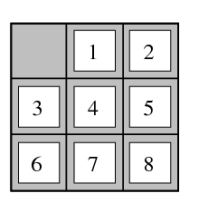

Különbség a feladatreprezentáció és a játékok között, az ágensek száma.
Tekintsünk egy diszkrét, statikus, determinisztikus és teljesen megfigyelhető feladatkörnyezetet. Tegyük fel, hogy a világ tökéletesen modellezhető a következőkkel:
lehetséges állapotok halmaza
egy kezdőállapot
lehetséges cselekvések halmaza (állapotátmenet függvény, minden állapothoz hozzárendelünk egy (cselekvés, állapot) rendezett párokból álló halmazt, tehát egy állapotban milyen cselekvések hatására milyen állapotba juthat az ágensünk)
állapotátmenet költségfüggvénye, minden lehetséges állapot-cselekvés-állapot hármashoz hozzárendelünk egy költséget, azaz egy állapotból egy (másik) állapotba jutásnak mekkora a költsége
célállapotok halmaza, tehát hova szeretnénk, hogy eljusson az ágensünk
Ez egy súlyozott gráfot definiál, ez a gráf az állapottér
Feltesszük továbbá, hogy az állapotok száma véges, vagy megszámlálható. Úton állapotok cselekvésekkel összekötött sorozatát értjük, ennek van egy összköltsége is.
pl: Utazástervezési feladat: útvonaltervezés,
állapotok = hely és időpont párok;
cselekvés = közlekedési eskzözök aktuális állapotból való indulása
költség= idő és pénz fgv-e
Pl: 8-kirakó
Kezdőállapot = maga a kezdőpálya
Állapotok = célállapotból csusztatásokkal elérhető konfigurációk
Cselekvés = üres hely mozgatása fel, le, jobbra és balra.
Költség = konstans minden cselekvésre
Célállapot = a célállapotot az ábra mutatja
Adott kezdőállapotból találjunk minimális költségű utat egy célállapotba. Az állapottér nem mindig adott explicit módon, és végtelen is lehet.
Ötlet: keresőfa építése, a kezdőállapotból növesszünk fát a szomszédos állapotok hozzávételével, amíg célállapotot nem találunk.
A keresőfa NEM azonos a feladat állapotterével, pl ha van két csúcs között oda-vissza él.
fakeresés():
perem = { újcsúcs(kezdőállapot) }
while perem.nemüres()
csúcs = perem.elsőkivesz()
if csúcs.célállapot() return csúcs
perem.beszúr(csúcs.kiterjeszt())
return failure
A csúcs.kiterjeszt() létrehozza a csúcsból elérhető összes állapotból a keresőfa csúcsot.
A perem egy prioritási sor, ettől függ a bejárási stratégia.
A hatékonyságot növelhetjük, ha úgy szúrunk be csúcsokat a perembe, hogy abban az esetben, ha a peremben található már ugyanazzal az állapottal egy másik csúcs, akkor ha az új csúcs költsége kisebb, lecseréljük a régi csúcsot az újra, különben nem tesszük bele az újat.
Algoritmus teljes akkor és csak akkor, amikor létezik véges számú állapot érintésével elérhető célállapot, az algoritmus meg is talál egyet.
Egy algoritmus optimális akkor és csak akkor, ha teljes és minden megtalált célállapot optimális költségű.
Idő- és memóriaigény számolásához pár betű.
b: szomszédok maximális száma
d: a legkisebb mélységű célállapot mélysége
m: A keresőfa maximáli smélyésge
Ahol m és d lehet megszámlálhatóan végtelen
Fakeresés, ahol a perem egy FIFO perem.
Teljes, minden, véges számú állapot érintésével elérhető állapotot véges időben elér
Általában nem optimális, de pl akkor igen, ha a költség a mélység nem csökkenő függvénye
időigény = tárigény
Fakeresés, LIFO perem
Teljes, ha a keresési fa véges mélységű
Nem optimális
Időigény: legrosszabb esetben (nagyon rossz, lehet végtelen), tárigény legrosszabb esetben (ez egész bíztató)
Mélységi keresések sorozata 1, 2, 3 stb korlátozva, amíg célállapotot nem találunk.
Teljesség és optimalitás a szélességivel egyezik meg
időigény = (akár jobb is lehet, mint a szélességi)
tárigény = (jobb, mint a mélységi)
Ez a legjobb informálatlan kereső.
A peremben a rendezés költség alapú, mindig először a legkisebb útköltségű csúcsot terjesztjük ki.
Teljes és optimális, ha minden él költsége nagyobb
(Idő és tárigény nagyban függ a költségfüggvénytől)
Ha a kezdőállapotból több út is vezet egy állapotba, akkor a fakeresés végtelen ciklusba eshet
Fakeresés, de a perem mellett még tárolunk egy ún. zárt halmazt is. A zárt halmazba azok a csúcsok kerülnek, amiket már kiterjesztettünk. A perembe helyezés előtt minden csúcsra megnézzük, hogy már a zárt halmazban van-e. Ha igen, nem tesszük a perembe. Másrészt minden peremből kivett csúcsot a zárt halmazba teszünk. Így minden állapothoz a legelső megtalált út lesz tárolva.
Itt már tudjuk, hogy “hova megyünk”.
Heurisztika: minden állapotból megbecsüli, hogy mekkora az optimális út költsége az adott állapotból egy célállapotba: tehát értelmesebben tudunk következő szomszédot választani.
Pl. légvonalbeli távolság a célig a térképen egy útvonal-tervezési problémához jó heurisztika.
: optimális költség közelítése a legközelebbi célállapotba állapotból
: tényleges költség a kezdőállapotból -be
Fakeresés, peremben a rendezést alapján csináljuk, mindig a legkisebb értékű csúcsot vesszük ki.
Ha csak annyit teszünk fel, hogy ha célállapot, akkor fakeresés esetén:
Teljes, de csak ha a keresési fa véges mélységű
Nem optimális
időigény, tárigény
gráfkeresésnél az optimalitás hiánya miatt az első megtalált út nem mindig a legjobb.
A peremben a rendezést alapján végezzük, a legkisebb csúcsot vesszük ki. a teljes út költségét becsüli a kezdőállapotból a végállapotba. Ha , és gráfkeresést alkalmazunk, akkor a Dijkstra-t kapjuk.
Fakeresést feltételezve, ha elfogadható és a keresési fa véges, akkor optimális.
Gráfkeresést feltételezve, ha konzisztens és az állapottér véges, akkor optimális.
Az optimálisan hatékony, de a tárigénye általában exponenciális. és nagyon nagyban függ -tól. Az időigény szintén nagyon nagyban függ -tól.
PL rá: http://www.inf.u-szeged.hu/~ihegedus/teach/a-star.pdf
A jó heurisztikus függvények előállítása fontos, lehetőleg elfogadható és konzisztens legyen.
Relaxált probléma: elhagyunk feltételeket az eredeti problémából.
Kombinálhatunk több heurisztikát is.
Készíthetünk mintaadatbázisokat, ahol részproblémák egzakt költségét tároljuk.
Belátható, hogy a relaxált probléma optimális költsége az eredeti probléma optimális költségénél, mivel az eredeti probléma állapottere része a relaxáltnak. elfogadható heurisztika.
Sőt mivel a heurisztika a probléma egy relaxációjának tényleges költésge, ezért konzisztens is.
lehetséges állapotok halmaza
egy kezdőállapot
lehetséges cselekvések halmaza, és egy állapotátmenet függvény
célállapotok
hasznosságfüggvény: Minden célállapothoz, hasznosságértéket rendel.
Két ágens van, felváltva lépnek. Az egyik maximalizálni akarja a hasznosságfüggvényt (MAX játékos), a másik minimalizálni (MIN játékos).
Konvenció szerint MAX kezd. Az első célállapot elérésekor a játéknak definíció szerint vége.
Zéró összegű játék: A MIN játékos minimalizálja a hasznosságot, ami ugyanaz, mint maximalizálni a negatív hasznosságot. Ez a negamax formalizmus. Itt a két játékos nyereségének az összege a végállapotban mindig nulla, innen a zéró összegű elnevezés.
(Játékelméletben: Az a játék, amelyben a játékosok csak egymás kárára növelhetik a nyereségüket.)
Mindkét játékos ismeri a teljes játékgráfot, bármilyen komplex számítást képes elvégezni és nem hibázik (tökéletes racionalitás). A minimax algoritmus alapján lehet megvalósítani a legjobb stratégiát tökéletes racionalitás esetén.
Minimax:
maxÉrték(n)
1 if végállapot(n) return hasznosság(n)
2 max = -végtelen
3 for a in n szomszédai
4 max = max(max, minÉrték(a))
5 return max
minÉrték(n)
1 if végállapot(n) return hasznosság(n)
2 min = +végtelen
3 for a in n szomszédai
4 min = min(min, maxÉrték(a))
5 return min
Ha végállapot, visszaadja a hasznosságát. Különben a max-nál n szomszédaira kiszámolja a maximális értéket, ami vagy az aktuális maximum, vagy nézi, hogy a másik játékos mit lépne.
Csak elméleti jelentőségű, a minimax algoritmus nem skálázódik. Az összes lehetséges állapot kiszámolása rettentő sok idő lenne pl sakknál.
Alfa-béta vágás
Ha tudjuk, hogy pl MAX-nak már van egy olyan stratégiája, ahol biztosan egy 10 értékű hasznosságot el tud érni az adott csúcsban, akkor a csúcs további kiértékelésekor nem kell vizsgálni olyan csúcsokat, ahol MIN ki tud kényszeríteni <= 10 hasznosságot, mert ennél már MAX-nak van jobb stratégiája
minÉrték és maxÉrték hívásakor átadjuk az alfa és béta paramétereket is a függvénynek.
Alfa jeletése: MAXnak már felfedeztünk egy olyan stratégiát, amely alfa hasznosságot biztosít, ha ennél kisebbet találnánk, azt nem vizsgáljuk.
Béta jelentése: MINnek már felfedeztünk egy olyan stratégiát, amely béta hasznosságot biztosít, ha ennél nagyobbat találnánk, azt nem vizsgáljuk
A gyakorlatban a minimax és az alfa-béta vágásos algoritmusokat is csak meghatározott mélységig vizsgáljuk, illetve heurisztikákat is alkalmazhatunk. A csúcsok bejárási sorrendje is nagyon fontos, mert pl alfa béta vágásnál egy jó rendezés mellett nagyon sok csúcsot vághatunk le.
A feladat az állapottérrel adott keresési problémák és az optimalizálási problémák jellemzőit ötvözi. Az állapotok és célállapotok speciális alakúak.
Lehetséges állapotok halmaza: a feladat állapotai az db változó lehetséges értékkombinációi.
(* itt most a descartes szorzat), ahol (D domain értékkészletének i. értéke) az i. változó lehetséges értékei
Célállapotok: a megengedett állapotok, adottak különböző korlátozások, és azok az állapotok a célállapotok, amik minden korlátozást kielégítenek.
Az út a megoldásig lényegtelen, és gyakran célfüggvény is értelmezve van az állapotok felett, ilyenkor egy optimális célállapot megtalálása a cél.
PL: Gráfszínezési probléma.
Adott egy gráf, ahol . A változók a gráf pontjai. Az pont lehetséges színeinek halmaza a és .
Minden élhez rendelünk egy korlátozást, amely azokat a színezéseket engedi meg, ahol az él két végpontja különböző színű.
Optimalizálás helyett keresési feladatot definiálunk. Nem az eredeti állapottér felett kell dolgozni, hanem kikell terjeszteni ezt a teret úgy, hogy felveszünk egy új “ismeretlen” értéket (jele: ?) és az összes Domainben lévő értékhez hozzáadjuk ezt a változót.
vektorok lesznek az új keresési tár állapotai
Kezdeti állapot: csupa kérdőjel
Állapotátmenet költsége legyen konstans
Állapotátmenetek valamely pontosa egy “?”-jelet lecserélnek egy adott változó másik értékére. sokkal kisebb fa méret.
Erre már lehet végrehajtani bármely korábban nézett informálatlan keresési algoritmus. A mélységi keresés elég jó, mivel kicsi a keresőfa mélysége és nem fogyaszt memóriát (backtrack)
Ennél jobb viszont az informális keresési algoritmusok bevetése:
Válasszuk azt a változót, amihez a legkisebb megengedett érték maradt.
Ha nem egyértelmű akkor azt, amelyre a legtöbb korlátozás vonatkozik
A választott változó megengedett értékeiből kezdjük azzal, amelyik a legkevésbé korlátozza a következő lépések lehetséges számát